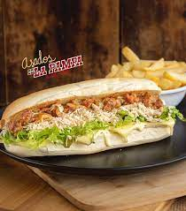

Receta: Sandwich Tipo Cubano
Analisis Y Desarrollo De Sofware
2874468
Ingredientes:
- 1 Pan Finas Hiervas
- Lechuga (Al Gusto)
- Cebolla
- 2 Rodajas De Tomate(Opcional)
- Papitas Ripio
- Carne o Pollo (Al Gusto)
- 1 Rodaja De Jamon
- 1 Rodaja De Queso
- Tartara

Preparación:
- Lavar Los Vegetales Y Reposarlos En Agua
- Picar la cebolla y el Tomate
- Abrir el pan a lo largo y tostarlo ligeramente
- Sobre el pan, colocar una hoja de lechuga, seguida de las rodajas de cebolla y, por último, el tomate.
- Poner Tartara (Al Gusto)
- Añadir las papitas ripio
- Añadir la salsa tártara encima de las papitas.
- Agregar el pollo o la carne sobre la salsa.
- Tanto el jamón como el queso deben estar divididos a la mitad antes de colocarlos
- Poner el jamón encima de la carne o el pollo
- Poner el Queso encima de la carne o el pollo
Tiempo estimado: 30 minutos
¡Delicioso y fácil de hacer!